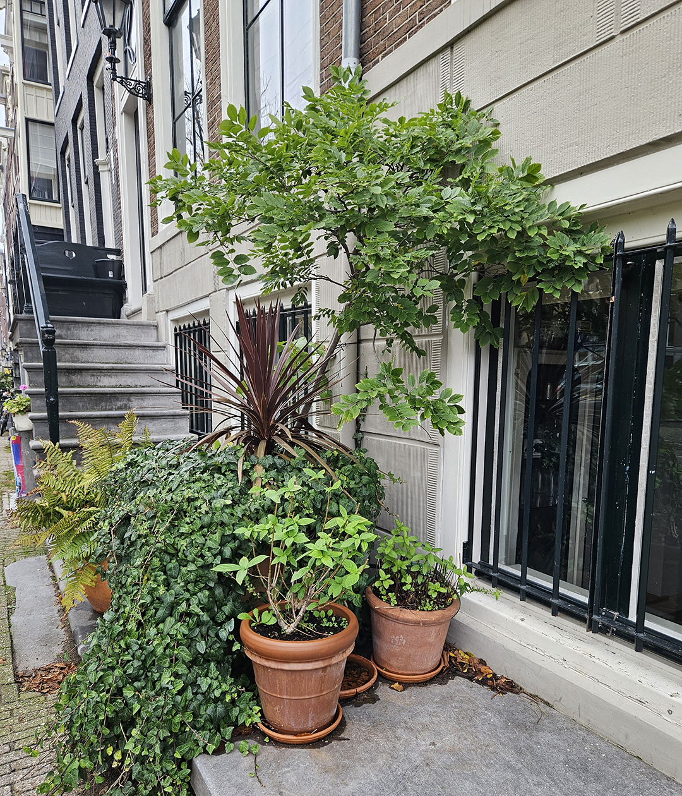
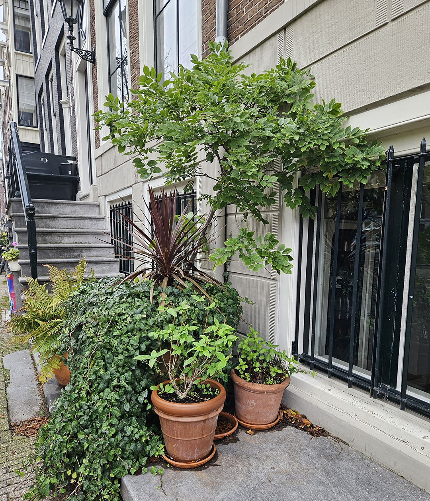

Inspiratie
Om vanuit het niets je eigen tuin te beginnen kan natuurlijk moeilijk zijn, daarom hebben wij rond Amsterdam veel foto's gemaakt van mensen en bedrijven die jullie al voor zijn geweest! Kijk gerust rond en doe lekker veel inspiratie op om straks jou eigen D.I.Y tuin te maken! En misschien staat jou tuintje er al tussen!


 
